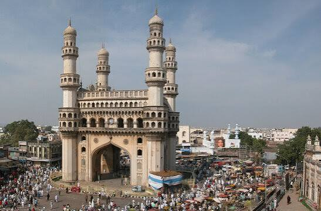
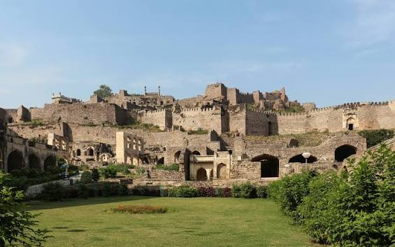
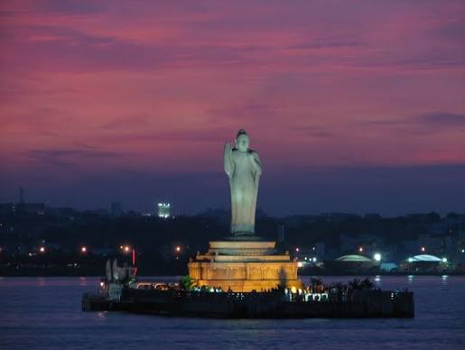
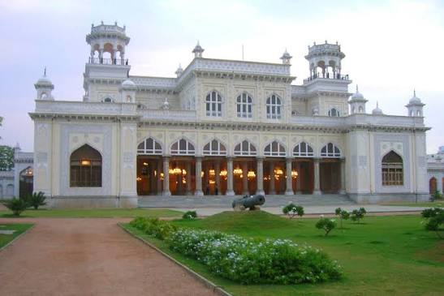
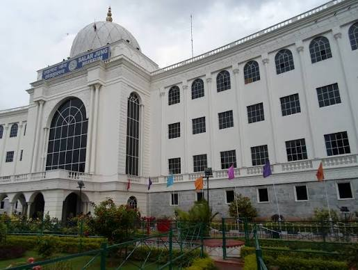
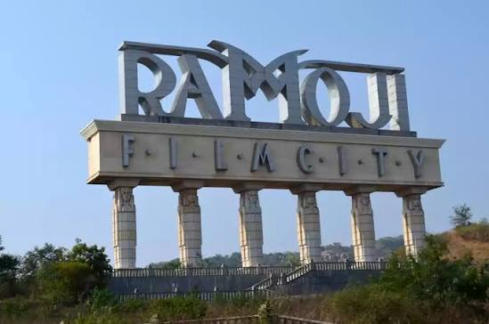

Charminar
Hyderabad's celebrated 16th-century monument, surrounded by the lively lanes of the Old City.
Read MoreHistory meets modern India
Founded in 1591 by Muhammad Quli Qutb Shah, Hyderabad is the capital of Telangana and a city shaped by centuries of culture. The legacy of the Nizams lives on in its palaces, architecture, and gracious traditions.
The Musi River flows through the heart of the city, while the historic bazaars recall its reputation as the City of Pearls. Today, that rich heritage sits alongside HITEC City, a thriving hub for technology and innovation. Hyderabad is a memorable blend of old-world charm and modern energy.

Places to remember
Explore landmarks that tell the story of Hyderabad, past and present.
Hyderabad's celebrated 16th-century monument, surrounded by the lively lanes of the Old City.
Read More
Walk through mighty gateways and hilltop ramparts at the seat of a storied kingdom.
Read More
Enjoy lakeside views and see the Buddha statue rising from the water at the city's heart.
Read More
Discover elegant courtyards and grand halls once used for the Nizams' ceremonial gatherings.
Read More
Spend time with a remarkable collection of art, antiques, and objects from around the world.
Read More
Go behind the scenes at a vast film studio filled with sets, gardens, and attractions.
Read MoreA feast for every sense
From slow-cooked classics to a cup of tea, make room for these local favourites.
Join the city as its communities come together for festivals, food, and culture.
Take a closer look






Make the most of your visit
| Best Time | October to February |
|---|---|
| By Road | TSRTC buses and city buses connect Hyderabad with nearby destinations. |
| By Rail | Major stations include Secunderabad, Hyderabad Deccan, and Kacheguda. |
| By Air | Rajiv Gandhi International Airport, Shamshabad, serves the city. |
| By Metro | Hyderabad Metro Rail connects destinations within the city. |
We'd love to hear from you
Send a message to the Visit Hyderabad team.